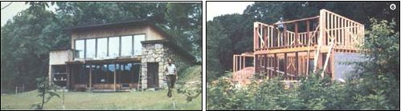

(LEFT): By digging the north side of their home into a hillside and covering the south side with grass, the Yamberts have cut their need for commercial power sources...(RIGHT) :and heavy insulation made possible by 2 X 6 framing.